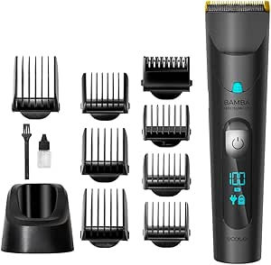
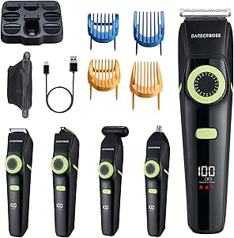

Solati Aparador Masculino
Aparador de corpo masculino com lâmina de cerâmica. Ideal para zonas sensíveis, resistente à água e com base de carregamento USB.
Ver na AmazonSelecionámos máquinas para diferentes perfis de utilização, desde aparadores simples para manutenção da barba até kits multifunções e modelos mais fortes para cortes completos.
Aparador de corpo masculino com lâmina de cerâmica. Ideal para zonas sensíveis, resistente à água e com base de carregamento USB.
Ver na Amazon
Máquina de cortar cabelo e barba multifunções com visor LED, lâminas em aço inox e carregamento USB. Inclui vários acessórios e cabeçotes.
Ver na Amazon
Kit multifunções com aparador de cabelo, barba e nariz. Bateria de longa duração e acessórios para todos os estilos.
Ver na Amazon
Máquina de cortar cabelo profissional preferida por barbeiros. Robusta, precisa e potente com alavanca ajustável e 4 pentes de corte incluídos.
Ver na Amazon
Kit 9 em 1 para barba, cabelo, nariz, orelhas e corpo. Tem 120 minutos de autonomia e lâmina ultra afiada para cortes mais controlados.
Ver na Amazon
Máquina tudo em um com 11 funções e 14 comprimentos. Boa opção para quem quer versatilidade sem complicar demasiado a rotina.
Ver na Amazon
Aparador de barba com sistema Lift & Trim, 20 posições de comprimento e até 90 minutos de autonomia sem fios.
Ver na Amazon
Máquina com bateria de lítio, 120 minutos de autonomia e lâminas em aço inox com revestimento de titânio. Inclui 8 pentes e modo com cabo.
Ver na Amazon
Máquina multifunções com aparador sem fios, corta-pelos, aparador de nariz e acessórios de grooming. Boa escolha para quem quer versatilidade num só equipamento.
Ver na Amazon